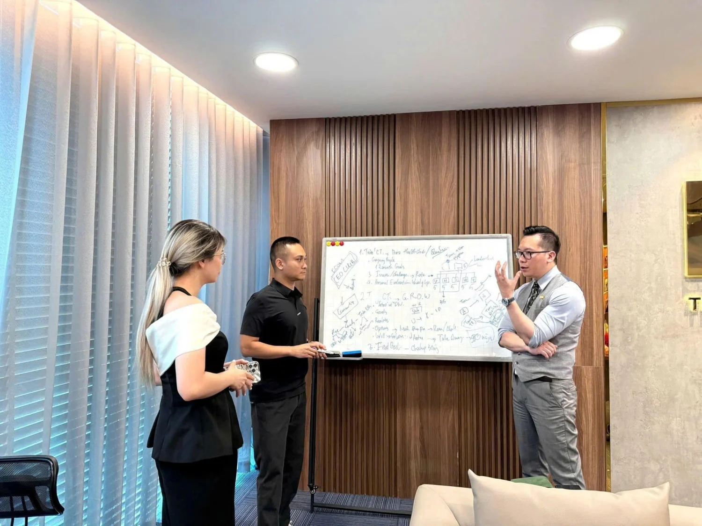

Việc 01
Soi đúng
Duy giúp bạn tách điều đang thấy khỏi vấn đề thật phía sau, bắt đầu từ những gì quan sát được chứ không từ cảm giác. Chưa gọi đúng tên vấn đề thì Duy chưa vội đưa công cụ.

Nhà sáng lập Cộng đồng Next Gen Founder
Coach. Trainer. Entrepreneur.
Lead. Inspire. Impact.
334.000theo dõi
YouTube
230.000đăng ký
TikTok
231.000theo dõi
Zalo
22.000theo dõi
Tính tới tháng 8 năm 2026, đọc từ trang công khai của từng kênh.
Ba mươi doanh nghiệp đã mời Duy đào tạo và tư vấn
Về Duy
Đó là chuyên gia có nghề, chủ doanh nghiệp dịch vụ, và người đang dẫn một đội ngũ. Điểm chung của họ: khách mua vì tin ở chính con người họ, trước khi tin vào công ty. Nên chuẩn của họ cũng là chuẩn của cả việc kinh doanh.
Điều họ muốn không dừng ở doanh thu tháng này. Họ muốn mình trở thành một điểm đến đáng tin: đối tác tìm tới khi có việc lớn, khách tìm tới trước khi đi so giá, người giỏi tìm tới xin một chỗ ngồi. Một tên tuổi khách nhớ, và dám tin.
Xa hơn nữa là di sản. Không phải một toà nhà hay một con số. Di sản của người sáng lập thế hệ mới là những gì mình đã đi qua: kinh nghiệm thật, bài học thật, cả những lần vấp. Mình gói lại cho rõ ràng, kể lại thật lòng, rồi trao cho đội ngũ của mình và cho những người đi sau. Đó là thứ còn ở lại khi mình không còn ngồi ở ghế đó nữa.
Duy làm việc đó cùng bạn. Đi trước bạn vài chặng nên biết đoạn nào dễ vấp, và ở bên trong lúc bạn tập cách làm mới.
Đọc đầy đủ về Duy

Cách Duy làm việc
Người cố vấn không phải là chức danh tự đặt. Nó là năm việc phải làm được. Bạn có quyền lấy năm điều này ra kiểm Duy.
Việc 01
Duy giúp bạn tách điều đang thấy khỏi vấn đề thật phía sau, bắt đầu từ những gì quan sát được chứ không từ cảm giác. Chưa gọi đúng tên vấn đề thì Duy chưa vội đưa công cụ.
Việc 02
Duy cho bạn thấy mình đang ở đâu, bước tiếp theo là gì, và điều gì chưa cần làm lúc này. Một bước vừa sức với chỗ bạn đang đứng, không phải một danh sách mẹo.
Việc 03
Duy đưa ra quyết định thật, tài liệu thật, và cả những sai lầm đã trả giá của chính mình, kèm điều kiện áp dụng. Có việc Duy vẫn đang làm dở, và sẽ nói với bạn đúng như vậy.

Việc 04
Duy nói rõ điều gì đủ, điều gì chưa, và cái giá của việc tiếp tục cách cũ. Sức nặng nằm ở lý do và ranh giới, không nằm ở giọng nói. Duy không làm nhẹ sự thật để bạn dễ chịu, nhưng cũng không để bạn một mình sau khi nghe.

Việc 05
Duy ở bên trong lúc bạn tập cách làm mới, rồi để lại một tiêu chí bạn tự đánh giá được và một câu hỏi còn dùng được lâu sau đó. Đích đến là bạn tự đi được, không phải bạn cần Duy mãi.
Duy không làm thay phần việc của bạn, và không cam kết một con số doanh thu. Nếu Duy thấy mình chưa giúp được bạn lúc này, Duy sẽ nói thẳng và ngồi lại chỉ bạn chỗ hợp hơn.
Phương pháp Duy dùng
Duy không dạy mẹo rời. Mỗi khung dưới đây có tên, có hình, và có chỗ dùng rõ ràng.
Chuyên gia nói về Duy
Làm việc cùng Coach Duy Nguyễn là một bước ngoặt trong sự nghiệp của tôi.
Coach Duy không chỉ giúp tôi giải quyết vấn đề mà còn mở ra một góc nhìn mới về bản thân và con đường kinh doanh.
Sau quá trình làm việc cùng Coach Duy Nguyễn, tôi không chỉ xây dựng được chiến lược vững chắc…
Cộng đồng Next Gen Founder · đang nhận danh sách chờ
Chuyên gia, chủ doanh nghiệp, người đang dẫn một đội ngũ. Điểm chung: khách tin bạn trước khi tin công ty bạn.
Cộng đồng là nơi luyện bốn năng lực dưới đây trong công việc thật, cùng những người hiểu chuyện bạn đang gặp vì họ cũng đang đi qua. Duy giữ nhịp và ở bên trong suốt chặng đó.
Đúng khách hiểu bạn làm gì, tin bạn làm được, và chủ động tìm tới.
Bán bằng chẩn đoán và sự thật, kể cả khi sự thật là bạn nên nói không.
Kinh nghiệm trong đầu bạn thành kết quả rõ, người chịu trách nhiệm và một nhịp cải tiến.
Thành viên tạo giá trị cho nhau với nhau, không chỉ chảy một chiều từ bạn xuống.
AI là năng lực nền của cả bốn năng lực trên. Nó làm nhanh hơn phần nghiên cứu, chuẩn bị và tóm tắt. Phán đoán, quan hệ và quyết định có trách nhiệm vẫn là phần của con người.

Ảnh minh hoạ. Mỗi người đều qua một buổi trao đổi trước khi vào.
Hành trình ba chặng
Không ai phải cam kết lớn ngay từ đầu. Mỗi chặng là một cánh cửa riêng, và bạn dừng ở chặng nào cũng được.
Cửa vào rộng nhất, không mất phí nhưng có sàng lọc. Bạn xem cách Duy làm việc trước khi quyết định đi tiếp.
Không mất phí · có sàng lọc Chặng 02Luyện đủ bốn năng lực suốt một năm trong công việc thật, có nhịp, có phản hồi, có người đi cùng chặng.
Bốn năng lực · một năm Chặng 03Diamond Founder Club theo lời mời, hoặc cố vấn riêng một kèm một cho số rất ít người mỗi năm.
Theo lời mời · nhận giới hạnBlog
Bốn câu dưới đây Duy nghe đi nghe lại từ người sáng lập, tới mức nghe nửa câu đầu là biết nửa sau. Thấy mình trong câu nào, bấm vào câu đó.

Hai người chủ, hai ngành khác nhau, cùng một câu nói. Điều họ mất không nằm ở doanh thu.
Giá bị mặc cả không phải vì giá cao. Cùng một khách, gặp người này thì hỏi giá, gặp ngườ...
Giải thích nhiều là hành vi của người cần được chấp nhận. Chuyên gia không chứng minh mì...

Vai trò không phải chuyện tính cách từng người. Nó thiết kế được, huấn luyện được, và đo...
Ba trạng thái nhận thức khách phải đi qua để tự quyết. Từng phần đều đúng, nhưng đảo thứ...
Kho công cụ và tài liệu
Dùng được ngay trên trang, không cần để lại thông tin gì. Công cụ nào đang làm thì ghi rõ đang làm.
Mười hai câu chấm lại buổi tư vấn gần nhất, chỉ ra bạn đang thiếu chạm nào. Ba phút, kết quả chỉ mình bạn thấy.
Trọn bộ kịch bản phản chiếu lời từ chối cho mười ngành dịch vụ, kèm lộ trình luyện ba mươi ngày.
Chấm nhanh một người qua ba lăng kính để biết nên dành cho họ một buổi sâu hay một lời hẹn lại.
Bước tiếp theo
Không phải bằng một quyết định lớn. Ba lối dưới đây đều là một việc như vậy, đủ nhỏ để làm xong trong tuần này. Bạn cứ đi chậm cũng được, Duy không giục ai.
Nơi nhà sáng lập luyện bốn năng lực trong công việc thật, có nhịp, có phản hồi, và có người hiểu chuyện mình đang gặp ở bên cạnh. Điền biểu mẫu hai phút, đội ngũ Next Gen Founder sẽ trao đổi để xem bạn có hợp không. Nếu chưa phải lúc, Duy và đội ngũ sẽ chỉ bạn bước hợp hơn.
Đăng ký danh sách chờMỗi tuần một lá thư ngắn: một điểm nghẽn thật của người sáng lập, cách Duy nhìn nó, và một bước bạn làm được ngay trong tuần. Không quảng cáo, không bán hàng trong thư.
Cảm ơn bạn. Ứng dụng thư vừa mở với nội dung soạn sẵn, bấm Gửi là xong.
Địa chỉ thư chưa đúng. Bạn kiểm lại giúp Duy.
Chưa rõ mình đang kẹt ở đâu thì làm phiếu chẩn đoán bảy phút trước. Muốn mời nói chuyện, hợp tác truyền thông hay hỏi về cố vấn riêng thì vào trang liên hệ, ở đó có đúng bốn cửa.
Xem cách liên hệ